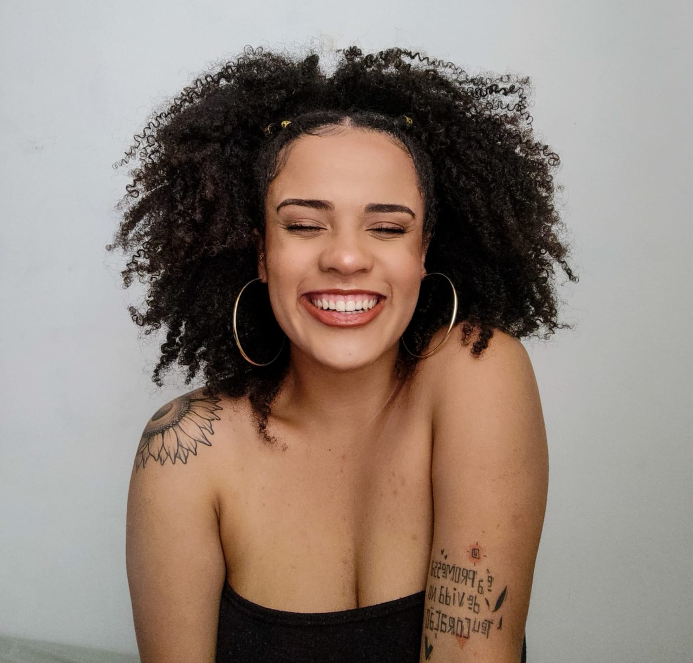

Ana Beatriz dos Santos
Desenvolvedora Full Stack
Desenvolvedora Full Stack e entusiasta das relações entre tecnologia, raça e gênero, pois acredita na potencialidade da diversidade. Em sua trajetória ampliou suas habilidades de comunicação, relacionamento e integração, inclinando-se para o valor de transformação social contido na dimensão tecnológica. Fascinada por temáticas que envolvem inovação, multidisciplinaridade e desenvolvimento, bem como performances ágeis. Dentre suas principais características, a curiosidade pode ser elencada como sua força motriz, uma vez que sua energia precisa ser canalizada para alguma direção, seja lendo, gargalhando com a família e amigos ou visitando exposições culturais.